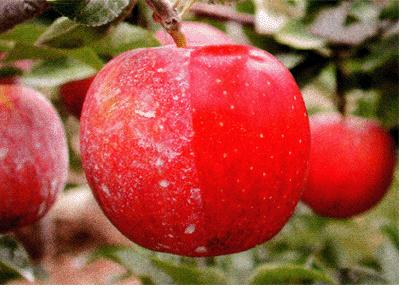
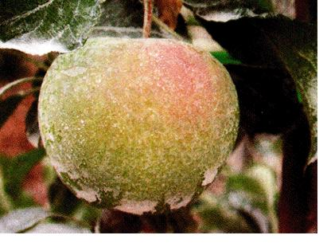
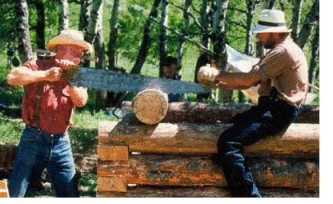
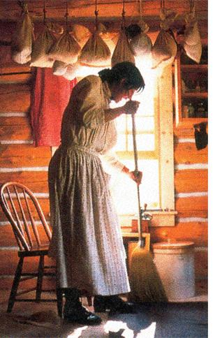

Green Gazette
The book Family Friendly Farming tells how to keep a family farm intact through several generations; the benefits of clay in the orchard; design software makes passive solar building easier; and PBS' reality show The Frontier House.
April/May 2002
Guerrilla Gardening: How to Create Gorgeous Gardens for Free
by Barbara Pallenberg
(Renaissance Books, $16.95). We all know stealing is wrong. Or is it? Pallenberg's biting wit and quasipolitical overtones almost make you forget she's advocating breaking the law. (Although she does caution her book cannot be used as a defense if you get caught.) Whether you legally acquire plant cuttings or secret them out in the middle of the night, Pallenberg's advice can help make sure your "prisoners of war" thrive back at your camp.
www.BetterBulbsDirect.com
Compared to incandes cents, compact fluorescent lights are a sweet deal. Now BetterBulbsDirect makes it even sweeter by letting you buy bulbs in bulk at wholesale prices. The site was set up to provide support for small and medium Northwest retailers, but the company won't stop you from cashing in.
Building with Earth: A Guide to FlexibleForm Earthbag Construction
by Paulina Wojciechowska
(Available on MOTHER'S Bookshelf, see Page 120). Earth bags-textile bags filled with earth and used with natural plasters for construction-offer all the advantages of adobe. Wojciechowska provides great detail on every aspect of construction, even ways to blend earthbag construction with other ecofriendly techniques like strawbale building.
A Sand County Almanac: With Essays on Conservation
by Aldo Leopold (Oxford University Press, $35, www.oup.com). To celebrate the 50th anniversary of Leopold's famous chronicle of a year on his Wisconsin farm, Oxford sent photographer Michael Sewell to capture images that reflect Leopold's prose. The beautiful result is a coffee table book for people who drink their coffee outside. A fitting anniversary present to honor one of our most influential nature writers.
www.newdream.org/turnthetide
Nobody denies that being involved in government and policy can be hard. Who to write? Why to write them? Well, sustainable activism just got a whole lot easier. The New Dream Action Network has launched its Turn the Tide Web site to help people better engage policy makers. Engaging and informative, this easy-to-follow site even keeps tabs on what you've accomplished with your activism, as well as how efforts are going on the whole.
Family Friendly Farming
What happens to a family farm when the parents die? If there are several siblings, the farm usually has to be sold to settle the estate.
"The sin of equal inheritance has destroyed far more family farms than multinational corporations, bankers and government regulations," Joel Salatin declares in his new book Family Friendly Farming (see MOTHER's Bookshelf, Page 120).
Salatin speaks from experience. His brother and sister left the family farm in Virginia's Shenandoah Valley; Salatin stayed, pioneering the grass-based farming he detailed in his books like Pastured Profit. With a bit of wise planning, Salatin's family avoided a painful farm feud and agreed to keep the farm in the family's future, for generations.
In addition to information about inheritance planning, the book offers practical advice on effective parenting, home schooling, living without TV, restoring community, setting worthy goals and involving everyone through regular family councils.
There is no time to waste. The average age of the American farmer is now nearly 60. If we are ever to have a truly sustainable agriculture, we must deal with the many issues Salatin raises. That makes Family Friendly Farming one of the most important farming books ever written.
- George De Vault
Keeping the "Earth" in Earth Day
Too often in recent years, Earth Day, the 32-year-old, April 22 celebration, has been co-opted into a corporate marketing tool. While some folks feel this is violating founder Gaylord Nelson's original vision for the event, others see it as a sign of progress.
But in many communities Earth Day continues to be a meaningful statement on environmentalism.
Earth Day Network has created a meeting place in cyberspace for people who want to keep the "Earth" in Earth Day. At www.earthday.net visitors can find local Earth Day celebrations, tips on organizing their own Earth Day celebrations, information on the history of the event and even how to buy Earth-friendly products. You can also contact the Network at 1616 P St. NW, Suite 200, Washington, D.C. 20036; or by calling (202) 518-0044.
Read one person's planetary perspective and her call to celebrate Earth Day, every day on Page 25.
Ghostly Claya Savior in the Orchard
A special kind of kaolin clay, used to make fine china and whiten paper, is proving to be an orchard miracle for fruit growers, especially organic ones. Reports of significant to total suppression of such problems as plum curculio, Japanese beetles, pear psylla, cedar apple rust, apple maggots and leaphoppers have come in from commercial and home orchards using the new nontoxic pest control product. Tennessee apple grower Hector Black reports his first unblemished organic apple harvest with the use of Surround, the kaolin clay product developed by the U.S. Department of Agriculture's Agricultural Research Service and Engelhard Corporation of Islelin, New Jersey.
‹ Kaolin clay stops pests and fungus, but lets the light in.
The white kaolin clay has extra fine particles that simultaneously thwart insects and act as an alkaline harrier to fungal spores. Light is able to pass through and gas exchange continues. Other clays totally mask light penetration and stop gas exchange on epidermal leaf and fruit cells.
When sprayed every 10 days or so on trees and developing fruit, Surround also reduces heat damage by reflecting infrared light. The coating lowers temperatures on leaves about 8 degrees and on fruit up to 15 degrees. Sunburn damage, which promotes disease, is eliminated, plant stress is lessened in hot weather, and fruit color and size are enhanced. Apples grown with the coating are more vivid in color and up to 17 percent larger.
Photo: COURTESY ENGELHARD (2)
Because all ingredients in Surround are Food and Drug Administration approved for food use and Organic Materials Review Institute-listed, the spray can be applied up to harvest. A thorough scrubbing removes the clay film.
You can purchase Surround from: Fedco, (207) 873-7333; www.fedcoseeds.com ; Peaceful Valley Farm Supply, Inc., (888) 784-1722 ; or Garden's Alive, (812) 537-8650; www.gardensalive.com . For more information on Surround, go to www.engelhard.com . Follow the links for market applications and agriculture, then fill out the form to have literature mailed to you.
-Doreen G. Howard
Design Software
Makes Passive Solar Easy
During the 1970s energy crisis, many designers and builders plunged into passive solar home construction. Most soon found that passive solar design is simple in concept, but a challenge in reality. Even small errors in design spawned major problems,such as overheating or freezing at night.
Today barriers to passive solar design are falling, thanks in part to sophisticated building software like Energy-10 from the Sustainable Buildings Industry Council in Washington, D.C.
Energy-10 allows architects, contractors and owner-builders to analyze passive-solar designs for energy performance at any stage of development. It also permits them to fine-tune their building designs to eke out additional energy savings and increase comfort levels. Perhaps the best feature allows the creation of region-specific building designs to help ensure optimal performance and comfort in a wide variety of climates.
As the simplest alternative energy system, a passive solar structure relies on south-facing glass, hefty insulation and thermal mass to capture and retain the sun's energy. A well-built solar home can slash heating bills by 25 percent to 80 percent.
Early passive solar designs sometimes failed to live up to expectations because the interactions between the solar home, climate and site are so complex. But Energy-10 software performs complicated calculations with click-of-the-button simplicity, including ranking energy saving features and determining the necessary size of backup heating and cooling systems.
Energy-10 does have weaknesses. I found the building options, especially roof systems, limited. Natural builders will need to customize the program a bit to use it successfully. The regional design feature lacks some solar radiation data.
The complete package sells for $250, but the Council is offering a generous $50 discount for Mother Earth News readers who provide the code MEM-02 with their order. The $200 package includes Designing Low-Energy Buildings, a well-written introduction to passive solar design and use of the software.
-Dan Chiras
For more information, contact:
Sustainable Buildings Industry Council, 1331 H St., NW, Suite 1000, Washington, D.C. 20005-4706; (202) 628-7400; www.sbicouncii.org.
PBS gets "real" withFrontier House
"Survivor." Competing six-person tribes play memo ry games to gain chocolate from manipulative host-god. "Real World:" Unemployed 20-somethings with absolutely nothing in common live in multimillion-dollar luxury and argue about racial connotations of bird names. "Big Brother:" Antisocial strangers cohabitate in a sparse, barrack-style house and do ... well, not a whole lot.
The recent spate of reality television shows hasn't exactly lived up to the "real" part. Which is perhaps why PBS has chosen to label its new reality show, "The Frontier House," a six-part "experiential history."
The show, premiering on May 1, follows three families as they try to mimic 19th-century life in Montana, using only tools and technology that would have been available to period homesteaders.
Challenges on the show are unscripted: a June snowstorm, forest fire and unanticipated weight loss are a few. And although there are some unrealities-the families don't have to face a Montana winter-the show should be full of entertaining, practical information for modern-day homesteaders.
Photo: COURTESY OF PBS (2)
Gazzette is written by Sarah Beth Cavanah except where noted.
 Photo: COURTESY OF PBS |
 |
 |
|
 |
 |
|